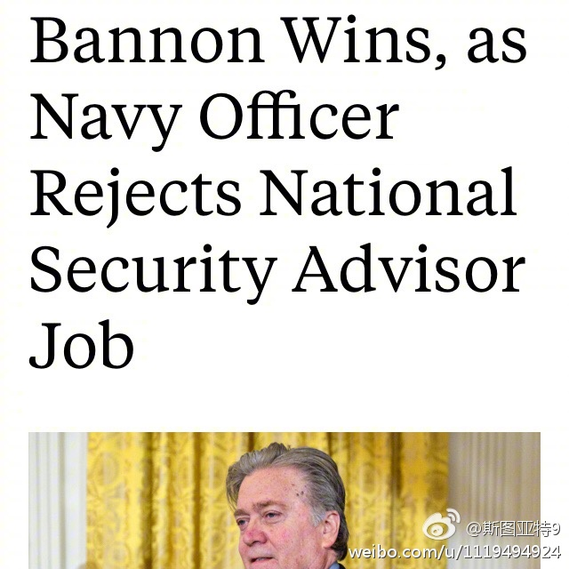

美国媒体报道，特朗普邀请的国土安全顾问候选人Howard拒绝邀请的重要原因是，他要求由他选择部门里的高级官员，而这个要求被特朗普拒绝。这被认为是Bannon的胜利。这说明特朗普在高质量的候选人和部门里安插的Bannon的亲信之间选择了后者。评论说，其他高质量候选人很可能都会有类似的条件。于是特朗普很可能只能在二流的候选人中选择。
美国《Foreign Policy》杂志网站的文章指出，美国国防部长马蒂斯几天前对北约的“moderate commitment”的话 网页链接 放在语境里看的话，其实和2011年当时奥巴马政府的国防部长盖茨说的意思几乎没有差别 网页链接 。唯一的区别是威胁意味稍微多了一丁点。现在看来，这个新国防部长上任一个多星期，表态都属于正常。不知道Bannon的魔爪以后会不会伸过去。
美国《外交政策》网站的文章指出，美国国防部长马蒂斯几天前对北约的“moderate commitment”的话 网页链接 放在语境里看的话，其实和2011年当时奥巴马政府的国防部长盖茨说的意思几乎没有差别 网页链接 。唯一的区别是威胁意味稍微多了一丁点。现在看来，这个新国防部长上任一个多星期，表态都属于正常。不知道Bannon的魔爪以后会不会伸过去。